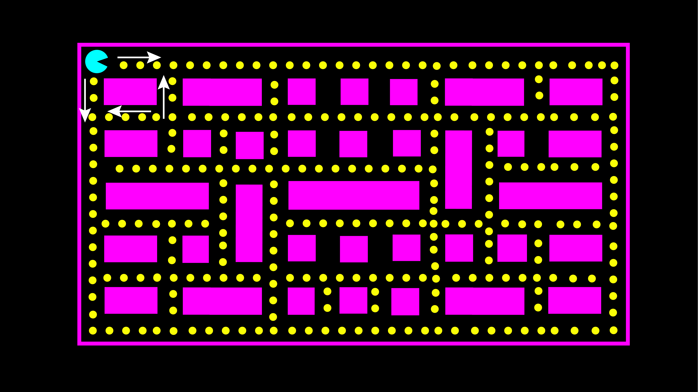
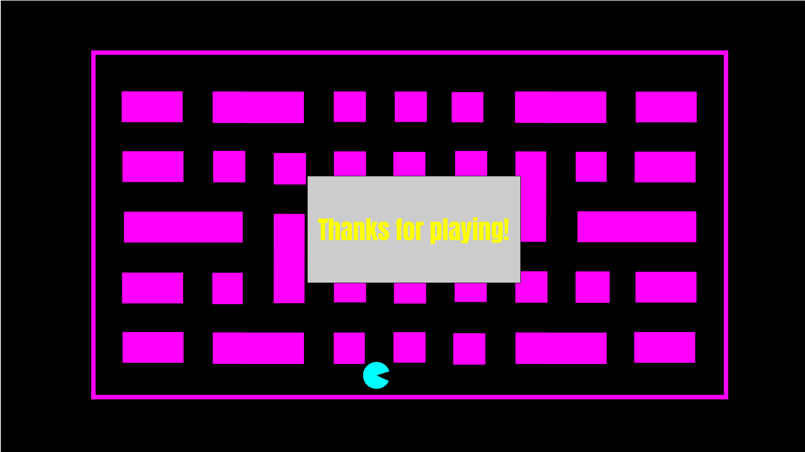
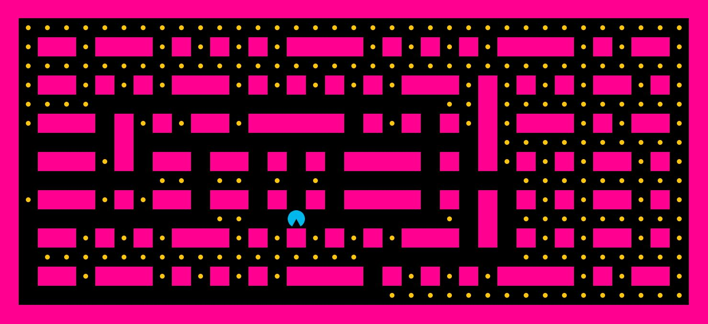

This was one school project I created in my second semester. We were asked to put in practice what we learn about HTML Canvas and JavaScript. We were allowed to choose any theme for this assignment.
I started by selecting my colour palette. After this, I made some designs in Adobe Illustrator of how I wanted the maze to look like. I decided to use the shapes we learned in class like the squares for the walls, circles for the pellets and Pacman. Another thing I wanted was the canvas to use the entire screen of my laptop.
 In this project I started by creating the canvas and make it the width of the screen. For this I set the height and width as the window inner width and window inner height. For the map I used an example from a Git Repo as a guide Because I did not know how to build the map, so this was a good help. This map is using a loop and switch case that goes to each array switching a symbol into a square or circle depending on what it was set previously. After this I drew the Pacman, this was quite easy since we learned at school.
After I had my canvas ready, I had to set collision detection, boundaries, velocity, and set up the keyboard. Since this game is more like a maze and it does not have ghosts, I decided to make Pacman’s velocity a bit faster than normal. Once Pacman eats the last pellet a message will appear on the screen saying, “Thank you for playing.”
This was a project I really enjoyed creating, however it was a bit stressful because sometimes my code wasn’t working. Or the keys were working even though I was following the tutorials from class. I was very happy with the results, but I want to update this project and give it points to the pellets, add a timer, and being able to show the total score. I would also like to make it responsive because for now it only works in medium and bog screens. So, this is something I would like to work on my free time. I like going back to my previous projects and try to improve them and apply the new things I learn.